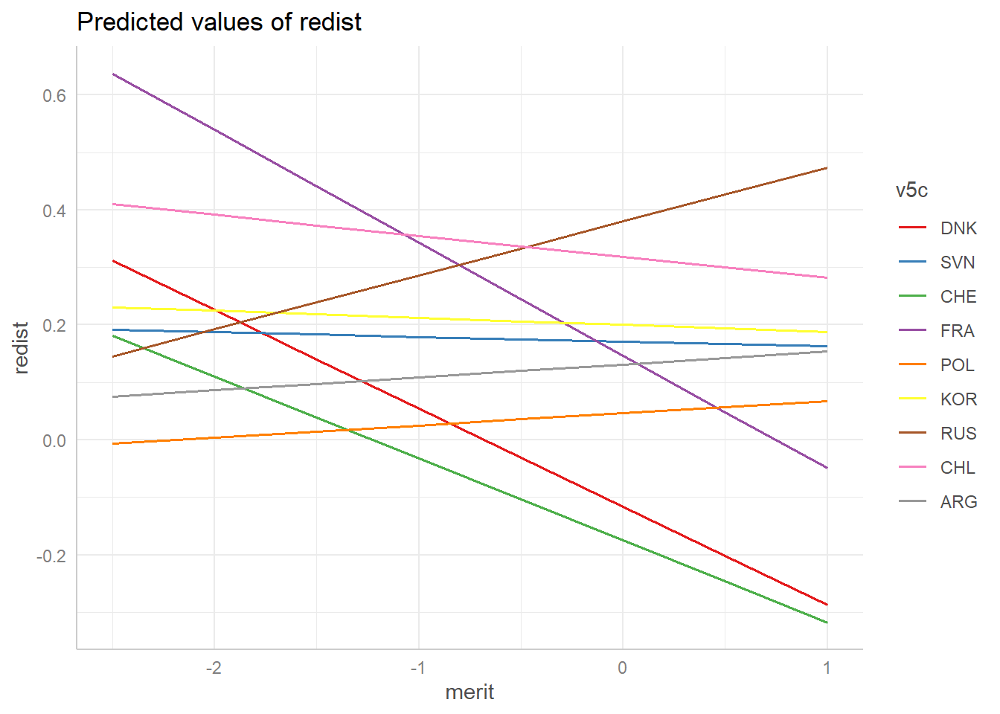
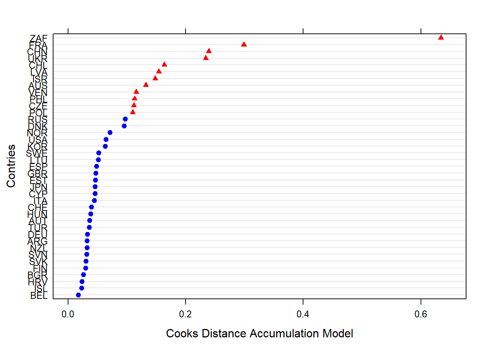
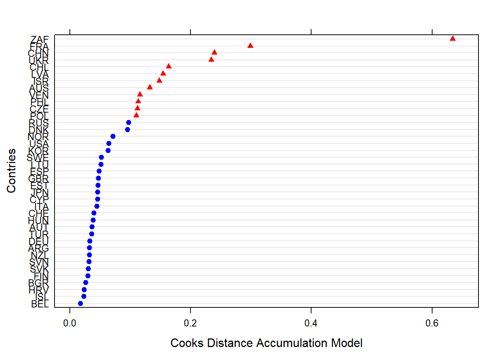

Meritocracy and distributive preferences ISSP
jueves 17 septiembre 2020 11:36:03
En el presente documento se exponen los análisis realizados a la base de datos creada en data-prep.
En la primera sección se entregan análisis descriptivos de las principales variables dependientes e independientes.
En la segunda sección se exponen los análisis factoriales a partir de los cuales se imputan valores para utilizar en la seccion de analisis multinivel. Además, en la segunda sección se incorpora un análisis de invarianza de medida y una ecuación estructural que resume los modelos a testear.
En la tercera sección se presentan los modelos multinivel que son utilizados para el artículo. Se calcula la correlación intraclase, se evalúan los efectos de las variables nacionales e individuales, para posteriormente evaluar pendientes aleatorias e interacciones entre niveles.
resultados. pese a que la educacion y la sal son formas de redistribucion la gente no lo considera lo mismo.
Libraries
library(sjPlot)
library(sjmisc) # several functions,ej read_stata
library(descr)
library(memisc) # codebook
library(psych) # cor2latex
library(corrplot) # graph correlations
library(lavaan)
library(stargazer)
library(semTools)
library(plyr) # count
library(dplyr)
library(car) # recode
library(ggplot2)
library(Hmisc)
library(tidyverse)
library(data.table)
library(stringr)
library(countrycode)
library(lme4)
library(texreg)
library(mice)
library(ggrepel) # for scatter labels in sjp.scatter
library(semPlot)
library(haven)
library(sjlabelled)
library(kableExtra)
library(ggeffects)
library(influence.ME)
library(lattice)Load data
load(file = "input/data/proc/redistrib.rda")
load(file = "input/data/proc/mer_pref.rda")
load("input/data/proc/redistrib.rda")
load("input/data/proc/getahead.rda")
load("input/data/proc/detearn.rda")1 Modelos Multinivel
1.1 Modelos nulos: correlacion intraclase.
load(file="input/data/proc/mer_pref.rda")
# Modelo nulo
results_0_redist = lmer(redist ~ 1 + (1| v5c), data = mer_pref, REML=F)
results_0_accum = lmer(accum ~ 1 + (1| v5c), data = mer_pref, REML=F)
htmlreg(list(results_0_redist,results_0_accum),
caption = "null model of Redistributive preferences and accumulation preferences",
custom.model.names = c("Redistributive", "Accumulation"),
caption.adove = T, star.symbol = "\\*") | Redistributive | Accumulation | |
|---|---|---|
| (Intercept) | -0.00 | -0.08 |
| (0.04) | (0.07) | |
| AIC | 95379.68 | 149164.50 |
| BIC | 95406.32 | 149191.14 |
| Log Likelihood | -47686.84 | -74579.25 |
| Num. obs. | 52995 | 52995 |
| Num. groups: v5c | 39 | 39 |
| Var: v5c (Intercept) | 0.06 | 0.21 |
| Var: Residual | 0.35 | 0.97 |
| ***p < 0.001; **p < 0.01; *p < 0.05 | ||
# Modelo nulo
# Correlacion intraclases accum
df<-data.frame(Variance=c("Between","Whithin"),
porcentaje=c(15,85))
ggplot(df,aes(x="",y=porcentaje, fill=Variance))+
geom_bar(stat = "identity",color="white")+
coord_polar(theta="y") +
geom_text(aes(label=paste(porcentaje, "%")),
position=position_stack(vjust=0.5),color="white",size=6)+
coord_polar(theta = "y") + ggtitle("Correlacion intraclase prederencias redistributivas")
reghelper::ICC(results_0_accum)## [1] 0.1788531df<-data.frame(Variance=c("Between","Whithin"),
porcentaje=c(18,82))
ggplot(df,aes(x="",y=porcentaje, fill=Variance))+
geom_bar(stat = "identity",color="white")+
coord_polar(theta="y") +
geom_text(aes(label=paste(porcentaje, "%")),
position=position_stack(vjust=0.5),color="white",size=6)+
coord_polar(theta = "y") + ggtitle("Correlacion intraclase prederencias redistributivas")

Correlacion intraclase
Aproximadamente un 15% de la varianza de las preferencias redistributivas se encuentra entre paises
Aproximadamente un 18% de la varianza de las preferencias redistributivas se encuentra entre paises.
1.2 Modelos de Preferencias redistributivas.
results_1_redist__1 = lmer(redist ~ gini_neto + fi_index + pibpc + 1 + (1| v5c), data = mer_pref, REML=F)
results_1_redist_3 = lmer(redist ~ merit + 1 + (1| v5c), data = mer_pref, REML=F)
results_1_redist_4 = lmer(redist ~ merit + bmerit + 1 + (1| v5c), data = mer_pref, REML=F)
results_1_redist_5 = lmer(redist ~ merit + bmerit + unmerit + 1 + (1| v5c), data = mer_pref, REML=F)
results_1_redist_6 = lmer(redist ~ merit + bmerit + unmerit + need + 1 + (1| v5c), data = mer_pref, REML=F)
results_1_redist_7 = lmer(redist ~ gini_neto + fi_index + pibpc + merit + bmerit + unmerit + need + 1 + (1| v5c), data = mer_pref, REML=F)
results_1_redist_9 = lmer(redist ~ gini_neto + fi_index + pibpc + merit + bmerit + unmerit + need + sstatus + as.factor(movstatus) + univ + as.factor(quintile_miss) + sex + age + 1 + (1| v5c), data = mer_pref, REML=F)
results_2_redist_macro_bv = lmer(redist ~ univ + as.factor(quintile_miss) + sstatus + as.factor(movstatus) + sex + age + merit + bmerit + unmerit + need + gini_neto + fi_index + pibpc + 1 + (1 + merit| v5c), data= mer_pref, REML=F)
results_3_redist_macro_bvi = lmer(redist ~ univ + as.factor(quintile_miss) + sstatus + as.factor(movstatus) + sex + age + merit + bmerit + unmerit + need + merit*gini_neto + fi_index + pibpc + 1 + (1 + merit| v5c), data = mer_pref, REML=F)htmlreg(list(results_1_redist__1, results_1_redist_3,results_1_redist_4,results_1_redist_5,results_1_redist_6,results_1_redist_7, results_1_redist_9, results_2_redist_macro_bv, results_3_redist_macro_bvi),
caption = "Redistributive preference models",
omit.coef = "(sstatus)|(movstatus)|(univ)|(quintile_miss)|(age)|(sex)",
custom.coef.names = c("Intercept", "Gini index", "Economic freedom index", "PIB per capita", "Meritocratic perception",
"Meritocratic preference", "Unmeritocratic Perception","Unmerit preference", "GINI x Merit-perception"),
caption.above = T,
star.symbol = "\\*",
center = T,
custom.note = "$***p <$ 0.001, $**p <$ 0.01, $*p <$ 0.05 <br> Since Model 6 control by subjetive status, mov subjetive status, Ed.univ, quintile_miss, age and sex") | Model 1 | Model 2 | Model 3 | Model 4 | Model 5 | Model 6 | Model 7 | Model 8 | Model 9 | |
|---|---|---|---|---|---|---|---|---|---|
| Intercept | 0.92* | -0.00 | -0.01 | -0.00 | -0.00 | 0.81* | 0.83* | 1.05** | 0.79* |
| (0.43) | (0.04) | (0.04) | (0.04) | (0.04) | (0.41) | (0.42) | (0.36) | (0.37) | |
| Gini index | -0.02** | -0.02*** | -0.02*** | -0.02*** | -0.01** | ||||
| (0.01) | (0.01) | (0.01) | (0.00) | (0.01) | |||||
| Economic freedom index | -0.02 | -0.00 | -0.01 | -0.04 | -0.04 | ||||
| (0.05) | (0.05) | (0.05) | (0.05) | (0.05) | |||||
| PIB per capita | -0.00*** | -0.00*** | -0.00*** | -0.00* | -0.00 | ||||
| (0.00) | (0.00) | (0.00) | (0.00) | (0.00) | |||||
| Meritocratic perception | -0.00 | -0.07*** | -0.13*** | -0.06*** | -0.06*** | -0.05*** | -0.06** | -0.32*** | |
| (0.01) | (0.01) | (0.01) | (0.01) | (0.01) | (0.01) | (0.02) | (0.09) | ||
| Meritocratic preference | 0.11*** | 0.12*** | 0.03*** | 0.03*** | 0.03*** | 0.04*** | 0.04*** | ||
| (0.01) | (0.01) | (0.01) | (0.01) | (0.01) | (0.01) | (0.01) | |||
| Unmeritocratic Perception | 0.13*** | 0.06*** | 0.06*** | 0.07*** | 0.06*** | 0.06*** | |||
| (0.01) | (0.01) | (0.01) | (0.01) | (0.01) | (0.01) | ||||
| Unmerit preference | 0.17*** | 0.17*** | 0.15*** | 0.15*** | 0.15*** | ||||
| (0.00) | (0.00) | (0.00) | (0.00) | (0.00) | |||||
| GINI x Merit-perception | 0.01** | ||||||||
| (0.00) | |||||||||
| AIC | 95448.50 | 95460.08 | 95178.59 | 94549.36 | 92759.24 | 92750.00 | 87852.63 | 87441.12 | 87434.85 |
| BIC | 95501.76 | 95495.59 | 95222.98 | 94602.63 | 92821.39 | 92838.78 | 88046.96 | 87653.11 | 87655.68 |
| Log Likelihood | -47718.25 | -47726.04 | -47584.30 | -47268.68 | -46372.62 | -46365.00 | -43904.31 | -43696.56 | -43692.43 |
| Num. obs. | 52995 | 52995 | 52995 | 52995 | 52995 | 52995 | 50677 | 50677 | 50677 |
| Num. groups: v5c | 39 | 39 | 39 | 39 | 39 | 39 | 39 | 39 | 39 |
| Var: v5c (Intercept) | 0.04 | 0.06 | 0.06 | 0.05 | 0.06 | 0.04 | 0.04 | 0.05 | 0.04 |
| Var: Residual | 0.35 | 0.35 | 0.35 | 0.35 | 0.34 | 0.34 | 0.33 | 0.33 | 0.33 |
| Var: v5c merit | 0.02 | 0.01 | |||||||
| Cov: v5c (Intercept) merit | 0.02 | 0.01 | |||||||
|
\(***p <\) 0.001, \(**p <\) 0.01, \(*p <\) 0.05 Since Model 6 control by subjetive status, mov subjetive status, Ed.univ, quintile_miss, age and sex |
|||||||||
Variables macroeconómicas: A nivel país, tanto la riqueza como la desigualdad generan un efecto negativo sobre las preferencias redistributivas. El efecto de la riqueza deja de ser significativo al aleatorizar la pendiente y al interactuar la desigualdad con el efecto de percepcion meritocratica. Por su parte, el índice de libertad económica no posee un efecto sobre meritocracia al ser controlado por desigualdad y riqueza.
Creencias meritocraticas: la variable percepcion meritocratica no posee un efecto significativo sobre la variable preferencias redistributivas hasta ser controlada por las preferencias meritocraticas, las cuales tienen un efecto positivo sobre la preferencia por la redistribucion. Esto destaca la importancia de diferenciar en los modelos de medidas percepciones y preferencias pues pueden tener efectos contrarios sobre una misma variable, anulando la significación de dicho efecto. En términos sustantivos esto indica que lo importante es la percepcion de distribucion según talento y esfuerzo, separado de la creencia de que el mundo debería funcionar así. El efecto de esta variable vuelve a crecer cuando se controla por las percepciones no meritocraticas, pero disminuye considerablemente al incorporar la variable preferencia no meritocratica de pago según necesidades. Esta ultima variable, es aquella que mayor efecto posee sobre las preferencias redistributivas, lo cual nos sugiere que la preferencia por un estado que promueva la igualdad está relacionada con la consideracion de las necesidades de las personas a la hora de distribuir recursos.
Estatus subjetivo: puede verse que ambas poseen un efecto significativo incluso según un criterio de 99,9% de confianza. El Efecto de la variable estatus subjetivo es negativo, es decir, una persona que se considera en una posición subjetiva alta posee una menor preferencia por al redistribucion. Por su parte, la movilidad subjetiva posee un efecto positivo sobre las preferencias redistributivas, cuando esta esta controladas por el estatus subjetivo individual y las creencias meritocraticas. Quizás, el contacto con grupos desfavorecidos puede generar mayor empatía.
Variables demográficas: Estas variables son todas significativas. Además, su inclusión en el modelo multinivel no anula la significación de las variables sustantivas del modelo. Entre ellas destaca la variable quintil de ingreso, según la cual, pertenecer al quintil más rico, implica una menor preferencia por la redistribucion.
Al aleatorizar la pendientre entre percepcion de meritocracia y preferencias redistributivas mejora significativamente el modelo, lo cual se debe a las diferencias entre paises en torno a dicha relacion. Comos se ejemplifica en el grafico de pendientes aleatorias, las relaciones incluso cambian de sentido de un pais a otro.
Al incluir la interaccion entre niveles el modelo mejora signifiicativamente. En alguna medida, lo que hace variar la pendiente de la relacion, es la desigualdad del pais.
results_1_redist_dem = lmer(redist ~ univ + as.factor(quintile_miss) + sstatus + as.factor(movstatus) + sex + age + 1 + (1| v5c), data = mer_pref, REML=F)
results_1_redist_indsust = lmer(redist ~ univ + as.factor(quintile_miss) + sstatus + as.factor(movstatus) + sex + age + merit + bmerit + unmerit + need + 1 + (1| v5c), data = mer_pref, REML=F)
results_1_redist_macro = lmer(redist ~ univ + as.factor(quintile_miss) + sstatus + as.factor(movstatus) + sex + age + merit + bmerit + unmerit + need + gini_neto + fi_index + 1 + (1| v5c), data = mer_pref, REML=F)
results_2_redist_macro_bv = lmer(redist ~ univ + as.factor(quintile_miss) + sstatus + as.factor(movstatus) + sex + age + merit + bmerit + unmerit + need + gini_neto + fi_index + 1 + (1 + merit| v5c), data= mer_pref, REML=F)
results_3_redist_macro_bvi = lmer(redist ~ univ + as.factor(quintile_miss) + sstatus + as.factor(movstatus) + sex + age + merit + bmerit + unmerit + need + merit*gini_neto + fi_index + 1 + (1 + merit| v5c), data = mer_pref, REML=F)
results_3_redist_macro_bvi_2 = lmer(redist ~ univ + as.factor(quintile_miss) + sstatus + as.factor(movstatus) + sex + age + merit + bmerit + unmerit + need + merit*fi_index + gini_neto + 1 + (1 + merit| v5c), data = mer_pref, REML=F)
#htmlreg(list(results_1_redist_macro,results_2_redist_macro_bv, results_3_redist_macro_bvi,results_3_redist_macro_bvi_2), caption = "Pendiente aleatorea e interaccion entre niveles", omit.coef = "(sstatus)|(movstatus)|(univ)|(quintile_miss)|(age)|(sex)")results_3_redist_macro_bvi_efectplot <- sjPlot::plot_model(results_3_redist_macro_bvi, type="std", title = "Modelo final con predictores, pendiente aleatoria e interaccion.")
ggsave(results_3_redist_macro_bvi_efectplot, filename = "output/results/results_3_redist_macro_bvi_efectplot.png", width = 10, height = 10, dpi= "retina")
graf2=ggpredict(results_2_redist_macro_bv, terms = c("merit","v5c [sample = 9]"), type="re")
pendiente_aleatoria_redistbv <- plot(graf2)
pendiente_aleatoria_redistbv
ggsave(pendiente_aleatoria_redistbv, filename = "output/results/pendiente_aleatoria_redistbv.png", width = 10, height = 10, dpi= "retina")
results_3_redist_macro_bvi_interacgini_meansd <- sjPlot::plot_model(results_3_redist_macro_bvi,
type = c("int"),
title = "Interaccion desigualdad",
mdrt.values = "meansd") + scale_color_discrete("Gini Index", labels = c("- 1 DS", "Media", "+ 1 DS")) + theme(legend.position = "bottom") + ylab("Redistributive preferences") + xlab("Meritocratic perception")
results_3_redist_macro_bvi_interacgini_minmax <- sjPlot::plot_model(results_3_redist_macro_bvi,
type = c("int"),
title = "Interaccion desigualdad", terms = c ("merit [-3,2]")) + scale_color_discrete("Gini Index", labels = c("Min", "Max")) + theme(legend.position = "bottom") + ylab("Redistributive preferences") + xlab("Meritocratic perception")
ggsave(plot_grid(list(results_3_redist_macro_bvi_efectplot, pendiente_aleatoria_redistbv,results_3_redist_macro_bvi_interacgini_meansd, results_3_redist_macro_bvi_interacgini_minmax) ,
margin = c(0.5,0.5,0.5,0.5),
tags = c(" ", " "," ", " ")),
filename = "output/results/results_3_redist_macro_bvi_interacgini.png", width = 10, height = 10, dpi= "retina")
#sjPlot::plot_model(results_3_redist_macro_bvi_2, type = c("int"), title = "Interaccion libertad economica", mdrt.values = "meansd")Modelos de Redistribucion; Efectos, pendientes aleatorias e interacciones
1.3 Modelos de Preferencias por marketizacion (accu).
results_1_accum__1 = lmer(accum ~ gini_neto + fi_index + pibpc + 1 + (1| v5c), data = mer_pref, REML=F)
results_1_accum_3 = lmer(accum ~ merit + 1 + (1| v5c), data = mer_pref, REML=F)
results_1_accum_4 = lmer(accum ~ merit + bmerit + 1 + (1| v5c), data = mer_pref, REML=F)
results_1_accum_5 = lmer(accum ~ merit + bmerit + unmerit + 1 + (1| v5c), data = mer_pref, REML=F)
results_1_accum_6 = lmer(accum ~ merit + bmerit + unmerit + need + 1 + (1| v5c), data = mer_pref, REML=F)
results_1_accum_7 = lmer(accum ~ gini_neto + fi_index + pibpc + merit + bmerit + unmerit + need + 1 + (1| v5c), data = mer_pref, REML=F)
results_1_accum_8 = lmer(accum ~ gini_neto + fi_index + merit + bmerit + unmerit + need + sstatus + as.factor(movstatus) + 1 + (1| v5c), data = mer_pref, REML=F)
results_1_accum_9 = lmer(accum ~ gini_neto + fi_index + merit + bmerit + unmerit + need + sstatus + as.factor(movstatus) + univ + as.factor(quintile_miss) + sex + age + 1 + (1| v5c), data = mer_pref, REML=F)
results_1_accum_macro = lmer(accum ~ univ + as.factor(quintile_miss) + sstatus + as.factor(movstatus) + sex + age + merit + bmerit + unmerit + need + gini_neto + fi_index + pibpc + 1 + (1| v5c), data = mer_pref, REML=F)
results_2_accum_macro_bv = lmer(accum ~ univ + as.factor(quintile_miss) + sstatus + as.factor(movstatus) + sex + age + merit + bmerit + unmerit + need + gini_neto + fi_index + pibpc + 1 + (1 + merit| v5c), data = mer_pref, REML=F)
results_3_accum_macro_bvi = lmer(accum ~ univ + as.factor(quintile_miss) + sstatus + as.factor(movstatus) + sex + age + merit + bmerit + unmerit + need + gini_neto + merit*fi_index + pibpc + 1 + (1 + merit| v5c), data = mer_pref, REML=F)
results_3_accum_macro_bvi_2 = lmer(accum ~ univ + as.factor(quintile_miss) + sstatus + as.factor(movstatus) + sex + age + merit + bmerit + unmerit + need + fi_index + merit*gini_neto + pibpc + 1 + (1 + merit| v5c), data = mer_pref, REML=F)
#htmlreg(list(results_1_accum_macro,results_2_accum_macro_bv,results_3_accum_macro_bvi, results_3_accum_macro_bvi_2), star.symbol = "\\*")htmlreg(list(results_1_accum__1, results_1_accum_3,results_1_accum_4,results_1_accum_5,results_1_accum_6,results_1_accum_7, results_2_accum_macro_bv, results_3_accum_macro_bvi),
caption = "Accumulation preferences models",
omit.coef = "(sstatus)|(movstatus)|(univ)|(quintile_miss)|(age)|(sex)",
custom.coef.names = c("Intercept", "Gini index" , "Economic freedom index", "PIB per capita" , "Meritocratic perception",
"Meritocratic preference", "Unmeritocratic Perception","Unmerit preference", "Economic-freedom Merit-perception"),
caption.above = T,
star.symbol = "\\*",
center = T,
custom.note = "$***p <$ 0.001, $**p <$ 0.01, $*p <$ 0.05 <br> Since Model 6 control by subjetive status, mov subjetive status, Ed.univ, quintile_miss, age and sex") | Model 1 | Model 2 | Model 3 | Model 4 | Model 5 | Model 6 | Model 7 | Model 8 | |
|---|---|---|---|---|---|---|---|---|
| Intercept | -1.33 | -0.08 | -0.08 | -0.08 | -0.08 | -1.27 | -0.90 | -1.54* |
| (0.76) | (0.07) | (0.07) | (0.07) | (0.07) | (0.75) | (0.70) | (0.72) | |
| Gini index | 0.05*** | 0.05*** | 0.05*** | 0.05*** | ||||
| (0.01) | (0.01) | (0.01) | (0.01) | |||||
| Economic freedom index | -0.05 | -0.06 | -0.11 | -0.02 | ||||
| (0.10) | (0.09) | (0.09) | (0.09) | |||||
| PIB per capita | 0.00 | 0.00 | 0.00 | 0.00 | ||||
| (0.00) | (0.00) | (0.00) | (0.00) | |||||
| Meritocratic perception | 0.03** | 0.09*** | 0.09*** | 0.04** | 0.04** | 0.04 | -0.63** | |
| (0.01) | (0.01) | (0.01) | (0.01) | (0.01) | (0.02) | (0.19) | ||
| Meritocratic preference | -0.10*** | -0.10*** | -0.03** | -0.03** | -0.04** | -0.04** | ||
| (0.01) | (0.01) | (0.01) | (0.01) | (0.01) | (0.01) | |||
| Unmeritocratic Perception | -0.01 | 0.04*** | 0.04*** | 0.03*** | 0.03*** | |||
| (0.01) | (0.01) | (0.01) | (0.01) | (0.01) | ||||
| Unmerit preference | -0.12*** | -0.12*** | -0.11*** | -0.11*** | ||||
| (0.01) | (0.01) | (0.01) | (0.01) | |||||
| Economic-freedom Merit-perception | 0.09*** | |||||||
| (0.03) | ||||||||
| AIC | 149150.71 | 149157.70 | 149078.74 | 149079.74 | 148745.41 | 148729.73 | 141550.66 | 141542.19 |
| BIC | 149203.98 | 149193.22 | 149123.13 | 149133.01 | 148807.56 | 148818.51 | 141762.66 | 141763.02 |
| Log Likelihood | -74569.36 | -74574.85 | -74534.37 | -74533.87 | -74365.71 | -74354.86 | -70751.33 | -70746.09 |
| Num. obs. | 52995 | 52995 | 52995 | 52995 | 52995 | 52995 | 50677 | 50677 |
| Num. groups: v5c | 39 | 39 | 39 | 39 | 39 | 39 | 39 | 39 |
| Var: v5c (Intercept) | 0.13 | 0.21 | 0.21 | 0.21 | 0.22 | 0.12 | 0.12 | 0.12 |
| Var: Residual | 0.97 | 0.97 | 0.97 | 0.97 | 0.97 | 0.97 | 0.95 | 0.95 |
| Var: v5c merit | 0.01 | 0.01 | ||||||
| Cov: v5c (Intercept) merit | 0.02 | 0.01 | ||||||
|
\(***p <\) 0.001, \(**p <\) 0.01, \(*p <\) 0.05 Since Model 6 control by subjetive status, mov subjetive status, Ed.univ, quintile_miss, age and sex |
||||||||
Variables macroeconómicas: Solo la desigualdad posee un efecto positivo sobre las preferencias de acumulación, es decir, en países donde existen mayores diferencias de ingresos la población tiende a validar la desigualdad económica en el acceso a salud y educación. Por su parte, la libertad económica no genera un efecto positivo como podría esperarse sobre las preferencias por acumulación.
Creencias meritocraticas: La variable percepciones meritocraticas posee un efecto significativo, el cual crece al ser controlado por preferencias meritocraticas y percepciones no meritocraticas. En función de esto podemos decir que creer que la gente de mayores recursos fue más esforzada que la gente de menores recursos posee una relación significativa con justificar desigualdades socioeconómicas en el acceso a salud y educación. Por su parte, las preferencias meritocraticas poseen un efecto negativo sobre estas creencias. Dado que las preferencias están controladas por las percepciones meritocraticas, podemos decir que quienes prefieren una distribucion según merito, pero no la perciben, poseen una mayor preferencia redistributiva, lo cual podría explicarse por su sentimiento de injusticia (_esta idea es similar a los decepcionados de Reynols) .
Estatus subjetivo: puede verse que ambas poseen un efecto significativo incluso según un criterio de 99,9% de confianza. El Efecto de la variable estatus subjetivo es positivo, es decir, una persona que se considera en una posición subjetiva alta posee una mayor preferencia por a la desigualdad de acceso a servicios básicos. Por su parte, la movilidad subjetiva posee un efecto negativo sobre las preferencias de acumulación, cuando esta está controlada por el estatus subjetivo individual y las creencias meritocraticas. Quizás, el contacto con grupos desfavorecidos puede generar mayor empatía.
Variables demográficas: Estas variables son todas significativas. Además, su inclusión en el modelo multinivel no anula la significación de las variables sustantivas del modelo. Entre ellas destaca la variable quintil de ingreso.
Cada modelo es significativamente mejor que el anterior. Respecto al modelo anterior si bien los efectos son menores, puede verse un efecto mucho más claro de una variable macro, el gini_neto (Esto va en la linea de la h: un pais más desigual fomenta preferencia por )
Al aleatorizar la pendientre entre percepcion de meritocracia y preferencias por la merkantilizacion mejora significativamente el modelo, lo cual se debe a las diferencias entre paises en torno a dicha relacion, comos e ejemplifica en el grafico de pendientes aleatorias, las relaciones incluso cambian de sentido de un pais a otro.
Al incorporar la interacción entre percepciones meritocraticas y libertad económica, cambia radicalmente el efecto de percepcion no meritocratica, el cual se vuelve negativo. [Tengo la duda de si al interactuar uno ve la pendiente en el menor valor de la variable macro, en este caso de fi-index].
results_3_accum_macro_bvi_efect <- sjPlot::plot_model(results_3_accum_macro_bvi, type="std", title = "Modelo de pendiente aleatoria e interaccion (desigualdad)")
ggsave(results_3_accum_macro_bvi_efect, filename = "output/results/results_3_accum_macro_bvi_efect.png", width = 10, height = 10, dpi= "retina")
graf2=ggpredict(results_2_accum_macro_bv, terms = c("merit","v5c [sample = 9]"), type="re")
pendientealeatoria_accum <- plot(graf2)
ggsave(pendientealeatoria_accum, filename = "output/results/pendientealeatoria_accum.png", width = 10, height = 10, dpi= "retina")
mer_accum_int_f1 <- sjPlot::plot_model(results_3_accum_macro_bvi_2,
type = c("int"),
title = "Interaccion Desigualdad",
mdrt.values = "meansd") + scale_color_discrete("Gini Index", labels = c("- 1 DS", "Media", "+ 1 DS")) + ylab("Accumulation preferences") + xlab("Meritocratic perception")
mer_accum_int_f2 <- sjPlot::plot_model(results_3_accum_macro_bvi_2,
type = c("int"),
title = "Interaccion Desigualdad") + scale_color_discrete("Freedom Economic Index", labels = c("Min", "Max")) + ylab("Accumulation preferences") + xlab("Meritocratic perception")
ggsave(mer_accum_int_f1, filename = "output/results/mer_accum_int_f1.png", width = 10, height = 10, dpi= "retina")
ggsave(plot_grid(list(results_3_accum_macro_bvi_efect, pendientealeatoria_accum,mer_accum_int_f1, mer_accum_int_f2) ,
margin = c(0.5,0.5,0.5,0.5), tags = c(" ", " "," ", " ")),
filename = "output/results/results_3_accum_macro_bvi_interacgini.png", width = 10, height = 10, dpi= "retina")
#summary(mer_pref$merit) No se puede ampliar el rango del grafico por que ese es el rango de la variable. 
Segun la interaccion, podemos decir que el discursos meritocratico permite justifica r la desigual participacion de derechos basicos como la salud y la educaiccion, pero solo en contextos con una baja desigualdad. En paises con una alta desigualdad, la percepcion de meritocracia no fomenta la justificacion del acceso desigual a servicios basicos, lo cual hipotetiso que puede deberse a las diferencias redicales entre los servicios de alto y bajo costo, diferencias que por sus consecuencias no permiten justificar el acceso desigual ni si quiera considerando las diferencias de merito.
# guardar tablas
#redis
save(results_1_redist_macro, file = "output/results/results_1_redist_macro.rdata")
save(results_2_redist_macro_bv, file = "output/results/results_2_redist_macro_bv.rdata")
save(results_3_redist_macro_bvi, file = "output/results/results_3_redist_macro_bvi.rdata")
#accum
save(results_1_accum_macro, file = "output/results/results_1_accum_macro.rdata")
save(results_2_accum_macro_bv, file = "output/results/results_2_accum_macro_bv.rdata")
save(results_3_accum_macro_bvi, file = "output/results/results_3_accum_macro_bvi.rdata")1.4 Redistribution and Redistributive preferences
results_1_redist__1r = lmer(redist ~ redis_relativo + fi_index + pibpc + 1 + (1| v5c), data = mer_pref, REML=F)
results_1_redist_3r = lmer(redist ~ merit + 1 + (1| v5c), data = mer_pref, REML=F)
results_1_redist_4r = lmer(redist ~ merit + bmerit + 1 + (1| v5c), data = mer_pref, REML=F)
results_1_redist_5r = lmer(redist ~ merit + bmerit + unmerit + 1 + (1| v5c), data = mer_pref, REML=F)
results_1_redist_6r = lmer(redist ~ merit + bmerit + unmerit + need + 1 + (1| v5c), data = mer_pref, REML=F)
results_1_redist_7r = lmer(redist ~ redis_relativo + fi_index + pibpc + merit + bmerit + unmerit + need + 1 + (1| v5c), data = mer_pref, REML=F)
results_1_redist_9r = lmer(redist ~ redis_relativo + fi_index + pibpc + merit + bmerit + unmerit + need + sstatus + as.factor(movstatus) + univ + as.factor(quintile_miss) + sex + age + 1 + (1| v5c), data = mer_pref, REML=F)
results_2_redist_macro_bvr = lmer(redist ~ univ + as.factor(quintile_miss) + sstatus + as.factor(movstatus) + sex + age + merit + bmerit + unmerit + need + redis_relativo + fi_index + pibpc + 1 + (1 + merit| v5c), data= mer_pref, REML=F)
results_3_redist_macro_bvir = lmer(redist ~ univ + as.factor(quintile_miss) + sstatus + as.factor(movstatus) + sex + age + merit + bmerit + unmerit + need + merit*redis_relativo + fi_index + pibpc + 1 + (1 + merit| v5c), data = mer_pref, REML=F)htmlreg(list(results_1_redist__1r, results_1_redist_3r,results_1_redist_4r,results_1_redist_5r,results_1_redist_6r,results_1_redist_7r, results_1_redist_9r, results_2_redist_macro_bvr, results_3_redist_macro_bvir),
caption = "Redistributive preference models",
omit.coef = "(sstatus)|(movstatus)|(univ)|(quintile_miss)|(age)|(sex)",
custom.coef.names = c("Intercept", "Redistribution", "Economic freedom index", "PIB per capita", "Meritocratic perception",
"Meritocratic preference", "Unmeritocratic Perception","Unmerit preference", "Redistribution x Merit-perception"),
caption.above = T,
star.symbol = "\\*",
center = T,
custom.note = "$***p <$ 0.001, $**p <$ 0.01, $*p <$ 0.05 <br> Since Model 6 control by subjetive status, mov subjetive status, Ed.univ, quintile_miss, age and sex") | Model 1 | Model 2 | Model 3 | Model 4 | Model 5 | Model 6 | Model 7 | Model 8 | Model 9 | |
|---|---|---|---|---|---|---|---|---|---|
| Intercept | 0.37 | -0.00 | -0.01 | -0.00 | -0.00 | 0.22 | 0.24 | 0.25 | 0.30 |
| (0.42) | (0.04) | (0.04) | (0.04) | (0.04) | (0.41) | (0.42) | (0.39) | (0.39) | |
| Redistribution | 0.33 | 0.45 | 0.43 | 0.40 | 0.22 | ||||
| (0.31) | (0.30) | (0.30) | (0.29) | (0.30) | |||||
| Economic freedom index | -0.04 | -0.03 | -0.03 | -0.05 | -0.05 | ||||
| (0.06) | (0.06) | (0.06) | (0.06) | (0.06) | |||||
| PIB per capita | -0.00** | -0.00* | -0.00* | -0.00 | -0.00 | ||||
| (0.00) | (0.00) | (0.00) | (0.00) | (0.00) | |||||
| Meritocratic perception | -0.00 | -0.07*** | -0.13*** | -0.06*** | -0.06*** | -0.05*** | -0.06** | 0.01 | |
| (0.01) | (0.01) | (0.01) | (0.01) | (0.01) | (0.01) | (0.02) | (0.04) | ||
| Meritocratic preference | 0.11*** | 0.12*** | 0.03*** | 0.03*** | 0.03*** | 0.04*** | 0.04*** | ||
| (0.01) | (0.01) | (0.01) | (0.01) | (0.01) | (0.01) | (0.01) | |||
| Unmeritocratic Perception | 0.13*** | 0.06*** | 0.06*** | 0.07*** | 0.06*** | 0.06*** | |||
| (0.01) | (0.01) | (0.01) | (0.01) | (0.01) | (0.01) | ||||
| Unmerit preference | 0.17*** | 0.17*** | 0.15*** | 0.15*** | 0.15*** | ||||
| (0.00) | (0.00) | (0.00) | (0.00) | (0.00) | |||||
| Redistribution x Merit-perception | -0.25* | ||||||||
| (0.12) | |||||||||
| AIC | 95455.34 | 95460.08 | 95178.59 | 94549.36 | 92759.24 | 92758.73 | 87861.09 | 87456.81 | 87455.12 |
| BIC | 95508.61 | 95495.59 | 95222.98 | 94602.63 | 92821.39 | 92847.51 | 88055.42 | 87668.81 | 87675.95 |
| Log Likelihood | -47721.67 | -47726.04 | -47584.30 | -47268.68 | -46372.62 | -46369.37 | -43908.54 | -43704.40 | -43702.56 |
| Num. obs. | 52995 | 52995 | 52995 | 52995 | 52995 | 52995 | 50677 | 50677 | 50677 |
| Num. groups: v5c | 39 | 39 | 39 | 39 | 39 | 39 | 39 | 39 | 39 |
| Var: v5c (Intercept) | 0.05 | 0.06 | 0.06 | 0.05 | 0.06 | 0.05 | 0.05 | 0.05 | 0.05 |
| Var: Residual | 0.35 | 0.35 | 0.35 | 0.35 | 0.34 | 0.34 | 0.33 | 0.33 | 0.33 |
| Var: v5c merit | 0.02 | 0.01 | |||||||
| Cov: v5c (Intercept) merit | 0.01 | 0.01 | |||||||
|
\(***p <\) 0.001, \(**p <\) 0.01, \(*p <\) 0.05 Since Model 6 control by subjetive status, mov subjetive status, Ed.univ, quintile_miss, age and sex |
|||||||||
A partir del análisis realizado se concluye que el nivel de redistribucion no genera un efecto directo sobre las preferencias por redistribucion. No obstante, es necesario considerar la evidencia de otras investigaciones que proponen que dicho efecto se da en condiciones particulares, tales como afectar más a quienes reciben los beneficios positivos de las transferencias netas [transferencias de apoyo - impuestos] (Andreoli y Olivera, 2020).
2 Analisis de robustez Modelos Multinivel
2.1 Regresiones finales sin paises en los que no converge el modelo de medida.
mer_pref_sinnonconvr<- mer_pref[which(mer_pref$v5c!='VEN'), ]
mer_pref_sinnonconvr<- mer_pref_sinnonconvr[which(mer_pref_sinnonconvr$v5!=191), ]
mer_pref_sinnonconvr <- mer_pref_sinnonconvr[which(mer_pref_sinnonconvr$v5c!='CYP'), ]
mer_pref_sinnonconvr <- mer_pref_sinnonconvr[which(mer_pref_sinnonconvr$v5!=380), ]
mer_pref_sinnonconvr <- mer_pref_sinnonconvr[which(mer_pref_sinnonconvr$v5!=428), ]
results_3_redist_macro_bvi_nocong = lmer(redist ~ univ + as.factor(quintile_miss) + sstatus + as.factor(movstatus) + sex + age + merit + bmerit + unmerit + need + merit*gini_neto + fi_index + pibpc + 1 + (1 + merit| v5c), data = mer_pref_sinnonconvr, REML=F)
results_3_accum_macro_bvi_nocong = lmer(accum ~ univ + as.factor(quintile_miss) + sstatus + as.factor(movstatus) + sex + age + merit + bmerit + unmerit + need + gini_neto + merit*fi_index + pibpc + 1 + (1 + merit| v5c), data = mer_pref_sinnonconvr, REML=F)htmlreg(list(results_3_redist_macro_bvi, results_3_redist_macro_bvi_nocong, results_3_accum_macro_bvi, results_3_accum_macro_bvi_nocong),
caption = "Comparison model excludig countries non convergent in the measurement",
custom.model.names = c("Whit", "Whithout","Whit", "Whithout"),
custom.header = list("Redistributive" = 1:2, "Accumulation" = 3:4),
star.symbol = "\\*",
custom.note = "$***p <$ 0.001, $**p <$ 0.01, $*p <$ 0.05 <br> countries non convergent in the measurement model:Venezuela, Croatia, Cyprus, Italy, Latvia",
custom.coef.names = c("Intercept", "University. Ed.", "Quintile 2", "Quintile 3", "Quintile 4","Quintile 5", "Quintile miss", "Subjetive status",
"Subjetive upward mobility", "Supjetive downward mobility","Subjetive non-mobility","Gender", "Age", "Meritorcatic perception",
"Meritocratic preferences", "Unmeritocratic perception", "Unmeritocratic preferences", "Gini index", "Economic freedom index", "PIB per capita",
"Merit-perception x Gini", "Merit-perception x Economic-freedom"),
caption.above = T)| Redistributive | Accumulation | |||
|---|---|---|---|---|
| Whit | Whithout | Whit | Whithout | |
| Intercept | 0.74 | 1.01* | -1.54* | -2.21* |
| (0.38) | (0.48) | (0.72) | (0.92) | |
| University. Ed. | -0.10*** | -0.10*** | 0.12*** | 0.12*** |
| (0.01) | (0.01) | (0.01) | (0.01) | |
| Quintile 2 | -0.03** | -0.02* | 0.02 | 0.03 |
| (0.01) | (0.01) | (0.02) | (0.02) | |
| Quintile 3 | -0.06*** | -0.06*** | 0.06** | 0.05* |
| (0.01) | (0.01) | (0.02) | (0.02) | |
| Quintile 4 | -0.08*** | -0.08*** | 0.06** | 0.06* |
| (0.01) | (0.01) | (0.02) | (0.02) | |
| Quintile 5 | -0.16*** | -0.15*** | 0.11*** | 0.10*** |
| (0.02) | (0.02) | (0.03) | (0.03) | |
| Quintile miss | -0.10*** | -0.10*** | 0.06*** | 0.06** |
| (0.01) | (0.01) | (0.02) | (0.02) | |
| Subjetive status | -0.00*** | -0.00*** | 0.00*** | 0.00*** |
| (0.00) | (0.00) | (0.00) | (0.00) | |
| Subjetive upward mobility | -0.01* | -0.01 | 0.06*** | 0.07*** |
| (0.01) | (0.01) | (0.01) | (0.01) | |
| Supjetive downward mobility | 0.03*** | 0.03*** | -0.02 | -0.02 |
| (0.01) | (0.01) | (0.01) | (0.01) | |
| Subjetive non-mobility | 0.01 | 0.02* | -0.02 | -0.01 |
| (0.01) | (0.01) | (0.02) | (0.02) | |
| Gender | 0.05*** | 0.05*** | -0.11*** | -0.11*** |
| (0.01) | (0.01) | (0.01) | (0.01) | |
| Age | 0.00*** | 0.00*** | -0.00*** | -0.00*** |
| (0.00) | (0.00) | (0.00) | (0.00) | |
| Meritorcatic perception | -0.33*** | -0.37*** | -0.63** | -0.72** |
| (0.09) | (0.08) | (0.19) | (0.27) | |
| Meritocratic preferences | 0.04*** | 0.03*** | -0.04** | -0.03* |
| (0.01) | (0.01) | (0.01) | (0.01) | |
| Unmeritocratic perception | 0.07*** | 0.07*** | 0.03*** | 0.03*** |
| (0.01) | (0.01) | (0.01) | (0.01) | |
| Unmeritocratic preferences | 0.15*** | 0.16*** | -0.11*** | -0.11*** |
| (0.00) | (0.00) | (0.01) | (0.01) | |
| Gini index | -0.01* | -0.01** | 0.05*** | 0.05*** |
| (0.01) | (0.00) | (0.01) | (0.01) | |
| Economic freedom index | -0.06 | -0.07 | -0.02 | 0.10 |
| (0.04) | (0.06) | (0.09) | (0.12) | |
| PIB per capita | 0.01** | 0.01*** | ||
| (0.00) | (0.00) | |||
| Merit-perception x Gini | -0.00 | 0.00 | 0.00 | |
| (0.00) | (0.00) | (0.00) | ||
| Merit-perception x Economic-freedom | 0.09*** | 0.11** | ||
| (0.03) | (0.04) | |||
| AIC | 91281.21 | 79354.21 | 141542.19 | 127582.97 |
| BIC | 91494.14 | 79572.33 | 141763.02 | 127801.09 |
| Log Likelihood | -45616.61 | -39652.10 | -70746.09 | -63766.48 |
| Num. obs. | 52681 | 45470 | 50677 | 45470 |
| Num. groups: v5c | 40 | 34 | 39 | 34 |
| Var: v5c (Intercept) | 0.05 | 0.03 | 0.12 | 0.11 |
| Var: v5c merit | 0.01 | 0.01 | 0.01 | 0.01 |
| Cov: v5c (Intercept) merit | 0.02 | 0.01 | 0.01 | 0.01 |
| Var: Residual | 0.33 | 0.33 | 0.95 | 0.96 |
|
\(***p <\) 0.001, \(**p <\) 0.01, \(*p <\) 0.05 countries non convergent in the measurement model:Venezuela, Croatia, Cyprus, Italy, Latvia |
||||
Como puede apresiarce en las regresiones, los pesos de las distintas variables y su significacion no varian sustantivamente al excluir del calculo a los paises que no convergen en los modelos de medida.
2.2 Casos influyentes
2.2.1 Cook Distance
#Redis
estex.m23_2a <- influence.ME::influence(results_3_redist_macro_bvi, "v5c")
plota <- plot(estex.m23_2a, which="cook",
cutoff = .1, sort = TRUE,
xlab = "Cooks Distance Redistributive Model",
ylab="Contries")
estex.m23_2b <- influence.ME::influence(results_3_accum_macro_bvi, "v5c")
plotb <-plot(estex.m23_2b, which="cook",
cutoff = .1, sort = TRUE,
xlab = "Cooks Distance Accumulation Model",
ylab="Contries") 

D de Cook
cut point > 0.1 (4/40)
2.2.2 Comparación de los modelos excluyendo casos influyentes a nivel 2
mer_pref_sininfl <- mer_pref[which(mer_pref$v5c!='ZAF'), ]
mer_pref_sininfl <- mer_pref_sininfl[which(mer_pref_sininfl$v5c!='CYP'), ]
mer_pref_sininfl <- mer_pref_sininfl[which(mer_pref_sininfl$v5c!='TUR'), ]
mer_pref_sininfl <- mer_pref_sininfl[which(mer_pref_sininfl$v5c!='TWN'), ]
mer_pref_sininfl <- mer_pref_sininfl[which(mer_pref_sininfl$v5c!='UKR'), ]
mer_pref_sininfl <- mer_pref_sininfl[which(mer_pref_sininfl$v5c!='CZE'), ]
mer_pref_sininfl <- mer_pref_sininfl[which(mer_pref_sininfl$v5c!='FRA'), ]
mer_pref_sininfl <- mer_pref_sininfl[which(mer_pref_sininfl$v5c!='AUS'), ]
mer_pref_sininfl <- mer_pref_sininfl[which(mer_pref_sininfl$v5c!='DNK'), ]
mer_pref_sininfl <- mer_pref_sininfl[which(mer_pref_sininfl$v5c!='USA'), ]
mer_pref_sininfl <- mer_pref_sininfl[which(mer_pref_sininfl$v5c!='VEN'), ]
mer_pref_sininfl <- mer_pref_sininfl[which(mer_pref_sininfl$v5c!='PHL'), ]
mer_pref_sininfl <- mer_pref_sininfl[which(mer_pref_sininfl$v5c!='POL'), ]
mer_pref_sininfl <- mer_pref_sininfl[which(mer_pref_sininfl$v5c!='CHN'), ]
results_3_redist_macro_bvi_sininf = lmer(redist ~ univ + as.factor(quintile_miss) + sstatus + as.factor(movstatus) + sex + age + merit + bmerit + unmerit + need + merit*gini_neto + fi_index + 1 + (1 + merit| v5c), data = mer_pref_sininfl, REML=F)
mer_pref_sininfl <- mer_pref[which(mer_pref$v5c!='ZAF'), ]
mer_pref_sininfl <- mer_pref_sininfl[which(mer_pref_sininfl$v5c!='VEN'), ]
mer_pref_sininfl <- mer_pref_sininfl[which(mer_pref_sininfl$v5c!='FRA'), ]
mer_pref_sininfl <- mer_pref_sininfl[which(mer_pref_sininfl$v5c!='CHN'), ]
mer_pref_sininfl <- mer_pref_sininfl[which(mer_pref_sininfl$v5c!='UKR'), ]
mer_pref_sininfl <- mer_pref_sininfl[which(mer_pref_sininfl$v5c!='ISR'), ]
mer_pref_sininfl <- mer_pref_sininfl[which(mer_pref_sininfl$v5c!='CHL'), ]
mer_pref_sininfl <- mer_pref_sininfl[which(mer_pref_sininfl$v5c!='AUS'), ]
mer_pref_sininfl <- mer_pref_sininfl[which(mer_pref_sininfl$v5c!='DNK'), ]
mer_pref_sininfl <- mer_pref_sininfl[which(mer_pref_sininfl$v5c!='LVA'), ]
mer_pref_sininfl <- mer_pref_sininfl[which(mer_pref_sininfl$v5c!='VEN'), ]
mer_pref_sininfl <- mer_pref_sininfl[which(mer_pref_sininfl$v5c!='PHL'), ]
mer_pref_sininfl <- mer_pref_sininfl[which(mer_pref_sininfl$v5c!='POL'), ]
mer_pref_sininfl <- mer_pref_sininfl[which(mer_pref_sininfl$v5c!='CZE'), ]
results_3_accum_macro_bvi_sininfl = lmer(accum ~ univ + as.factor(quintile_miss) + sstatus + as.factor(movstatus) + sex + age + merit + bmerit + unmerit + need + gini_neto + merit*fi_index + pibpc + 1 + (1 + merit| v5c), data = mer_pref_sininfl, REML=F)htmlreg(list(results_3_redist_macro_bvi, results_3_redist_macro_bvi_sininf,results_3_accum_macro_bvi, results_3_accum_macro_bvi_sininfl),
caption = "Comparison model Without influential cases in level two",
custom.model.names = c("Whit", "Whithout","Whit", "Whithout"),
custom.header = list("Redistributive" = 1:2, "Accumulation" = 3:4),
caption.above = T,
star.symbol = "\\*",
custom.note = "$***p <$ 0.001, $**p <$ 0.01, $*p <$ 0.05 <br> Influential contries: CYP, TUR, TWN, UKR,CZE, FRA, AUS, DNK, USA, VEN,PHL, POL, CHN, ISR, CHL, LVA, PHL",
custom.coef.names = c("Intercept", "University. Ed.", "Quintile 2", "Quintile 3", "Quintile 4","Quintile 5", "Quintile miss", "Subjetive status",
"Subjetive upward mobility", "Supjetive downward mobility" ,"Subjetive non-mobility","Gender", "Age", "Meritorcatic perception",
"Meritocratic preferences", "Unmeritocratic perception", "Unmeritocratic preferences", "Gini index", "Economic freedom index", "PIB per capita",
"Merit-perception x Gini", "Merit-perception x Economic-freedom"))| Redistributive | Accumulation | |||
|---|---|---|---|---|
| Whit | Whithout | Whit | Whithout | |
| Intercept | 0.74 | 0.97 | -1.54* | -4.55*** |
| (0.38) | (0.50) | (0.72) | (0.91) | |
| University. Ed. | -0.10*** | -0.12*** | 0.12*** | 0.12*** |
| (0.01) | (0.01) | (0.01) | (0.01) | |
| Quintile 2 | -0.03** | -0.01 | 0.02 | 0.04 |
| (0.01) | (0.01) | (0.02) | (0.02) | |
| Quintile 3 | -0.06*** | -0.03 | 0.06** | 0.02 |
| (0.01) | (0.02) | (0.02) | (0.03) | |
| Quintile 4 | -0.08*** | -0.04* | 0.06** | 0.03 |
| (0.01) | (0.02) | (0.02) | (0.03) | |
| Quintile 5 | -0.16*** | -0.10*** | 0.11*** | 0.09** |
| (0.02) | (0.02) | (0.03) | (0.03) | |
| Quintile miss | -0.10*** | -0.06*** | 0.06*** | 0.05* |
| (0.01) | (0.01) | (0.02) | (0.02) | |
| Subjetive status | -0.00*** | -0.00*** | 0.00*** | 0.00** |
| (0.00) | (0.00) | (0.00) | (0.00) | |
| Subjetive upward mobility | -0.01* | -0.02** | 0.06*** | 0.05*** |
| (0.01) | (0.01) | (0.01) | (0.01) | |
| Supjetive downward mobility | 0.03*** | 0.03*** | -0.02 | -0.02 |
| (0.01) | (0.01) | (0.01) | (0.02) | |
| Subjetive non-mobility | 0.01 | 0.02 | -0.02 | -0.02 |
| (0.01) | (0.01) | (0.02) | (0.02) | |
| Gender | 0.05*** | 0.06*** | -0.11*** | -0.11*** |
| (0.01) | (0.01) | (0.01) | (0.01) | |
| Age | 0.00*** | 0.00*** | -0.00*** | -0.00*** |
| (0.00) | (0.00) | (0.00) | (0.00) | |
| Meritorcatic perception | -0.33*** | -0.37** | -0.63** | -0.75* |
| (0.09) | (0.11) | (0.19) | (0.33) | |
| Meritocratic preferences | 0.04*** | 0.04*** | -0.04** | -0.07*** |
| (0.01) | (0.01) | (0.01) | (0.02) | |
| Unmeritocratic perception | 0.07*** | 0.06*** | 0.03*** | 0.01 |
| (0.01) | (0.01) | (0.01) | (0.01) | |
| Unmeritocratic preferences | 0.15*** | 0.17*** | -0.11*** | -0.11*** |
| (0.00) | (0.01) | (0.01) | (0.01) | |
| Gini index | -0.01* | -0.00 | 0.05*** | 0.05*** |
| (0.01) | (0.01) | (0.01) | (0.01) | |
| Economic freedom index | -0.06 | -0.13* | -0.02 | 0.38*** |
| (0.04) | (0.06) | (0.09) | (0.11) | |
| PIB per capita | 0.01** | 0.01** | ||
| (0.00) | (0.00) | |||
| Merit-perception x Gini | 0.00 | 0.00 | ||
| (0.00) | (0.00) | |||
| Merit-perception x Economic-freedom | 0.09*** | 0.11* | ||
| (0.03) | (0.05) | |||
| AIC | 91281.21 | 46975.43 | 141542.19 | 78366.97 |
| BIC | 91494.14 | 47173.41 | 141763.02 | 78573.49 |
| Log Likelihood | -45616.61 | -23463.72 | -70746.09 | -39158.48 |
| Num. obs. | 52681 | 28253 | 50677 | 28595 |
| Num. groups: v5c | 40 | 26 | 39 | 26 |
| Var: v5c (Intercept) | 0.05 | 0.03 | 0.12 | 0.06 |
| Var: v5c merit | 0.01 | 0.01 | 0.01 | 0.01 |
| Cov: v5c (Intercept) merit | 0.02 | 0.01 | 0.01 | 0.01 |
| Var: Residual | 0.33 | 0.31 | 0.95 | 0.90 |
|
\(***p <\) 0.001, \(**p <\) 0.01, \(*p <\) 0.05 Influential contries: CYP, TUR, TWN, UKR,CZE, FRA, AUS, DNK, USA, VEN,PHL, POL, CHN, ISR, CHL, LVA, PHL |
||||
Al excluir los casos influyentes la mayoria de las variable no cambia drasticamente significaciones ni sentidos. La variable fi_index pasa a ser significativa. A mayor libertad economica menor preferencia redistributiva.
Considerando las variables sustantivas, al eliminar quellos paises con una distancia de cook por sobre el punto de corte (0.1 = 4/40), la variable percepcion meritocratica pierde significacion aunque gana potencia, manteniendose el rechazo a la hipotesis nula con un 95% de confianza. La variable percepcion no meritocrtica pierde la mitad de su efecto y desja de ser significativa. En consideracion de esta evaluacion podemos decir que las relaciones señaladas son provocadas en alguna medida por los 13 paises que se
2.3 Centrado
2.3.1 Redistributive prefereneces centered on the group mean
mer_pref$merit_g = as.numeric(mer_pref$merit - mer_pref$j_merit)
mer_pref$bmerit_g = as.numeric(mer_pref$bmerit - mer_pref$j_bmerit)
mer_pref$unmerit_g = as.numeric(mer_pref$unmerit - mer_pref$j_unmerit)
mer_pref$need_g = as.numeric(mer_pref$need - mer_pref$j_need)
results_1_redist__1 = lmer(redist ~ gini_neto + fi_index + pibpc + 1 + (1| v5c), data = mer_pref, REML=F)
results_1_redist_3 = lmer(redist ~ merit_g + 1 + (1| v5c), data = mer_pref, REML=F)
results_1_redist_4 = lmer(redist ~ merit_g + bmerit_g + 1 + (1| v5c), data = mer_pref, REML=F)
results_1_redist_5 = lmer(redist ~ merit_g + bmerit_g + unmerit_g + 1 + (1| v5c), data = mer_pref, REML=F)
results_1_redist_6 = lmer(redist ~ merit_g + bmerit_g + unmerit_g + need_g + 1 + (1| v5c), data = mer_pref, REML=F)
results_1_redist_7 = lmer(redist ~ gini_neto + fi_index + pibpc + merit_g + bmerit_g + unmerit_g + need_g + 1 + (1| v5c), data = mer_pref, REML=F)
results_1_redist_9 = lmer(redist ~ gini_neto + fi_index + pibpc + merit_g + bmerit_g + unmerit_g + need_g + sstatus + as.factor(movstatus) + univ + as.factor(quintile_miss) + sex + age + 1 + (1| v5c), data = mer_pref, REML=F)
results_2_redist_macro_bv = lmer(redist ~ univ + as.factor(quintile_miss) + sstatus + as.factor(movstatus) + sex + age + merit_g + bmerit_g + unmerit_g + need_g + gini_neto + fi_index + pibpc + 1 + (1 + merit| v5c), data= mer_pref, REML=F)
results_3_redist_macro_bvi = lmer(redist ~ univ + as.factor(quintile_miss) + sstatus + as.factor(movstatus) + sex + age + merit_g + bmerit_g + unmerit_g + need_g + merit_g*gini_neto + fi_index + pibpc + 1 + (1 + merit_g | v5c), data = mer_pref, REML=F)htmlreg(list(results_1_redist__1, results_1_redist_3,results_1_redist_4,results_1_redist_5,results_1_redist_6,results_1_redist_7, results_1_redist_9, results_2_redist_macro_bv, results_3_redist_macro_bvi),
caption = "Redistributive preference models",
omit.coef = "(sstatus)|(movstatus)|(univ)|(quintile_miss)|(age)|(sex)",
custom.coef.names = c("Intercept", "Gini index", "Economic freedom index", "PIB per capita", "Meritocratic perception",
"Meritocratic preference", "Unmeritocratic Perception","Unmerit preference", "GINI x Merit-perception"),
caption.above = T,
star.symbol = "\\*",
center = T,
custom.note = "$***p <$ 0.001, $**p <$ 0.01, $*p <$ 0.05 <br> Since Model 6 control by subjetive status, mov subjetive status, Ed.univ, quintile_miss, age and sex") | Model 1 | Model 2 | Model 3 | Model 4 | Model 5 | Model 6 | Model 7 | Model 8 | Model 9 | |
|---|---|---|---|---|---|---|---|---|---|
| Intercept | 0.92* | -0.00 | -0.00 | -0.00 | -0.00 | 0.92* | 0.83 | 1.08** | 0.89* |
| (0.44) | (0.04) | (0.04) | (0.04) | (0.04) | (0.44) | (0.43) | (0.36) | (0.38) | |
| Gini index | -0.02** | -0.02** | -0.02** | -0.02*** | -0.01* | ||||
| (0.01) | (0.01) | (0.01) | (0.00) | (0.01) | |||||
| Economic freedom index | -0.02 | -0.02 | -0.02 | -0.05 | -0.07 | ||||
| (0.05) | (0.05) | (0.05) | (0.05) | (0.05) | |||||
| PIB per capita | -0.00*** | -0.00*** | -0.00*** | -0.00 | -0.00 | ||||
| (0.00) | (0.00) | (0.00) | (0.00) | (0.00) | |||||
| Meritocratic perception | -0.00 | -0.07*** | -0.13*** | -0.06*** | -0.06*** | -0.05*** | -0.06** | -0.33*** | |
| (0.01) | (0.01) | (0.01) | (0.01) | (0.01) | (0.01) | (0.02) | (0.09) | ||
| Meritocratic preference | 0.11*** | 0.12*** | 0.03*** | 0.03*** | 0.03*** | 0.03*** | 0.03*** | ||
| (0.01) | (0.01) | (0.01) | (0.01) | (0.01) | (0.01) | (0.01) | |||
| Unmeritocratic Perception | 0.13*** | 0.06*** | 0.06*** | 0.07*** | 0.07*** | 0.07*** | |||
| (0.01) | (0.01) | (0.01) | (0.01) | (0.01) | (0.01) | ||||
| Unmerit preference | 0.17*** | 0.17*** | 0.16*** | 0.15*** | 0.15*** | ||||
| (0.00) | (0.00) | (0.00) | (0.00) | (0.00) | |||||
| GINI x Merit-perception | 0.01** | ||||||||
| (0.00) | |||||||||
| AIC | 95369.61 | 95381.34 | 95101.54 | 94457.51 | 92652.98 | 92642.91 | 88094.54 | 87691.76 | 87685.29 |
| BIC | 95422.88 | 95416.85 | 95145.93 | 94510.77 | 92715.12 | 92731.68 | 88288.87 | 87903.76 | 87906.12 |
| Log Likelihood | -47678.80 | -47686.67 | -47545.77 | -47222.75 | -46319.49 | -46311.45 | -44025.27 | -43821.88 | -43817.65 |
| Num. obs. | 52995 | 52995 | 52995 | 52995 | 52995 | 52995 | 50677 | 50677 | 50677 |
| Num. groups: v5c | 39 | 39 | 39 | 39 | 39 | 39 | 39 | 39 | 39 |
| Var: v5c (Intercept) | 0.04 | 0.06 | 0.06 | 0.06 | 0.06 | 0.04 | 0.04 | 0.05 | 0.04 |
| Var: Residual | 0.35 | 0.35 | 0.35 | 0.35 | 0.33 | 0.33 | 0.33 | 0.33 | 0.33 |
| Var: v5c merit | 0.02 | ||||||||
| Cov: v5c (Intercept) merit | 0.02 | ||||||||
| Var: v5c merit_g | 0.01 | ||||||||
| Cov: v5c (Intercept) merit_g | 0.01 | ||||||||
|
\(***p <\) 0.001, \(**p <\) 0.01, \(*p <\) 0.05 Since Model 6 control by subjetive status, mov subjetive status, Ed.univ, quintile_miss, age and sex |
|||||||||
2.3.2 Accumulation models centered on the group mean
results_1_accum__1 = lmer(accum ~ gini_neto + fi_index + pibpc + 1 + (1| v5c), data = mer_pref, REML=F)
results_1_accum__2 = lmer(accum ~ gini_neto + fi_index + pibpc + 1 + (1| v5c), data = mer_pref, REML=F)
results_1_accum_3 = lmer(accum ~ merit_g + 1 + (1| v5c), data = mer_pref, REML=F)
results_1_accum_4 = lmer(accum ~ merit_g + bmerit_g + 1 + (1| v5c), data = mer_pref, REML=F)
results_1_accum_5 = lmer(accum ~ merit_g + bmerit_g + unmerit_g + 1 + (1| v5c), data = mer_pref, REML=F)
results_1_accum_6 = lmer(accum ~ merit_g + bmerit_g + unmerit_g + need_g + 1 + (1| v5c), data = mer_pref, REML=F)
results_1_accum_7 = lmer(accum ~ gini_neto + fi_index + pibpc + merit_g + bmerit_g + unmerit_g + need_g + 1 + (1| v5c), data = mer_pref, REML=F)
results_1_accum_8 = lmer(accum ~ gini_neto + fi_index + pibpc + bmerit_g + unmerit_g + need_g + sstatus + as.factor(movstatus) + 1 + (1| v5c), data = mer_pref, REML=F)
results_1_accum_9 = lmer(accum ~ gini_neto + fi_index + pibpc + merit_g + bmerit_g + unmerit_g + need_g + sstatus + as.factor(movstatus) + univ + as.factor(quintile_miss) + sex + age + 1 + (1| v5c), data = mer_pref, REML=F)
results_1_accum_macro = lmer(accum ~ univ + as.factor(quintile_miss) + sstatus + as.factor(movstatus) + sex + age + merit_g + bmerit_g + unmerit_g + need_g + gini_neto + fi_index + 1 + (1| v5c), data = mer_pref, REML=F)
results_2_accum_macro_bv = lmer(accum ~ gini_neto + fi_index + pibpc + univ + as.factor(quintile_miss) + sstatus + as.factor(movstatus) + sex + age + merit_g + bmerit_g + unmerit_g + need_g + gini_neto + fi_index + 1 + (1 + merit_g| v5c), data = mer_pref, REML=F)
results_3_accum_macro_bvi = lmer(accum ~ gini_neto + fi_index + pibpc + univ + as.factor(quintile_miss) + sstatus + as.factor(movstatus) + sex + age + merit_g + bmerit_g + unmerit_g + need_g + merit_g*fi_index + 1 + (1 + merit_g| v5c), data = mer_pref, REML=F)
results_3_accum_macro_bvi_2 = lmer(accum ~ gini_neto + fi_index + pibpc + univ + as.factor(quintile_miss) + sstatus + as.factor(movstatus) + sex + age + merit_g + bmerit_g + unmerit_g + need_g + merit_g*gini_neto + 1 + (1 + merit_g| v5c), data = mer_pref, REML=F)
#htmlreg(list(results_1_accum_macro,results_2_accum_macro_bv,results_3_accum_macro_bvi, results_3_accum_macro_bvi_2), star.symbol = "\\*")htmlreg(list(results_1_accum__1, results_1_accum_3,results_1_accum_4,results_1_accum_5,results_1_accum_6,results_1_accum_7, results_2_accum_macro_bv, results_3_accum_macro_bvi),
caption = "Accumulation preferences models",
omit.coef = "(sstatus)|(movstatus)|(univ)|(quintile_miss)|(age)|(sex)",
custom.coef.names = c("Intercept", "Gini index" , "Economic freedom index", "PIB per capita" , "Meritocratic perception",
"Meritocratic preference", "Unmeritocratic Perception","Unmerit preference", "Economic-freedom Merit-perception"),
caption.above = T,
star.symbol = "\\*",
center = T,
custom.note = "$***p <$ 0.001, $**p <$ 0.01, $*p <$ 0.05 <br> Since Model 6 control by subjetive status, mov subjetive status, Ed.univ, quintile_miss, age and sex")| Model 1 | Model 2 | Model 3 | Model 4 | Model 5 | Model 6 | Model 7 | Model 8 | |
|---|---|---|---|---|---|---|---|---|
| Intercept | -1.33 | -0.08 | -0.08 | -0.08 | -0.08 | -1.33 | -0.89 | -1.48* |
| (0.76) | (0.07) | (0.07) | (0.07) | (0.07) | (0.76) | (0.72) | (0.74) | |
| Gini index | 0.05*** | 0.05*** | 0.05*** | 0.05*** | ||||
| (0.01) | (0.01) | (0.01) | (0.01) | |||||
| Economic freedom index | -0.05 | -0.05 | -0.11 | -0.03 | ||||
| (0.10) | (0.10) | (0.09) | (0.09) | |||||
| PIB per capita | 0.00 | 0.00 | 0.00 | 0.00 | ||||
| (0.00) | (0.00) | (0.00) | (0.00) | |||||
| Meritocratic perception | 0.03** | 0.08*** | 0.09*** | 0.04** | 0.04** | 0.04 | -0.62** | |
| (0.01) | (0.01) | (0.01) | (0.01) | (0.01) | (0.02) | (0.19) | ||
| Meritocratic preference | -0.10*** | -0.10*** | -0.03** | -0.03** | -0.04** | -0.04** | ||
| (0.01) | (0.01) | (0.01) | (0.01) | (0.01) | (0.01) | |||
| Unmeritocratic Perception | -0.01 | 0.04*** | 0.04*** | 0.03*** | 0.03*** | |||
| (0.01) | (0.01) | (0.01) | (0.01) | (0.01) | ||||
| Unmerit preference | -0.12*** | -0.12*** | -0.11*** | -0.11*** | ||||
| (0.01) | (0.01) | (0.01) | (0.01) | |||||
| Economic-freedom Merit-perception | 0.09*** | |||||||
| (0.03) | ||||||||
| AIC | 149150.71 | 149157.81 | 149079.06 | 149080.04 | 148744.77 | 148730.98 | 141553.05 | 141544.60 |
| BIC | 149203.98 | 149193.32 | 149123.45 | 149133.30 | 148806.91 | 148819.76 | 141765.05 | 141765.44 |
| Log Likelihood | -74569.36 | -74574.90 | -74534.53 | -74534.02 | -74365.38 | -74355.49 | -70752.53 | -70747.30 |
| Num. obs. | 52995 | 52995 | 52995 | 52995 | 52995 | 52995 | 50677 | 50677 |
| Num. groups: v5c | 39 | 39 | 39 | 39 | 39 | 39 | 39 | 39 |
| Var: v5c (Intercept) | 0.13 | 0.21 | 0.21 | 0.21 | 0.21 | 0.13 | 0.13 | 0.12 |
| Var: Residual | 0.97 | 0.97 | 0.97 | 0.97 | 0.97 | 0.97 | 0.95 | 0.95 |
| Var: v5c merit_g | 0.01 | 0.01 | ||||||
| Cov: v5c (Intercept) merit_g | 0.02 | 0.01 | ||||||
|
\(***p <\) 0.001, \(**p <\) 0.01, \(*p <\) 0.05 Since Model 6 control by subjetive status, mov subjetive status, Ed.univ, quintile_miss, age and sex |
||||||||